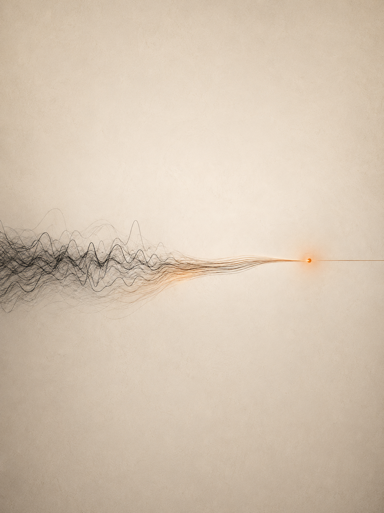
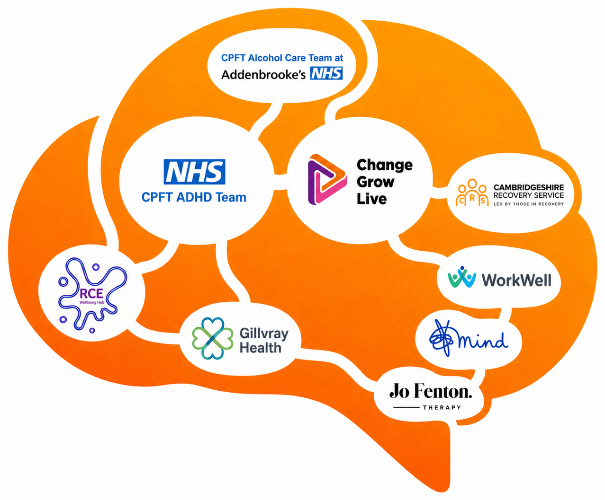

I said I was building something around the gap. This is me sending it properly — a private pressure-test, not a pitch, and not an endorsement request.
A private strategic ally note — not a public proposal. NIA (Neurologically Informed Addiction) is proposed founder-originated terminology — not a recognised diagnosis — now being opened for dialogue with the Royal College of Psychiatrists. OTOS is non-clinical infrastructure. No endorsement is assumed or implied from Dr Claire, LAMP, RCE or CPFT.
We spoke briefly after one of your RCE sessions. I told you I was convinced about ADHD driving my addiction, was working on “something” and asked whether it would be OK to send you material once it was ready. You were kind enough to say yes. This is that follow-up and I have tried to make it worth your time.
Let me be clear about what this is. It is a private note, not a public proposal and not a pitch. I am not asking you to endorse OTOS, to buy anything, to own clinical risk or to make LAMP or RCE into something they are not. I am asking for the one thing your perspective is unusually well placed to give: an honest pressure-test.
When we last spoke I couldn't explain this clearly — I didn't yet understand what I was building. Now I can. I first called it a Double Trouble Diagnosis; then, through my own learning, research and a letter from my psychiatrist that backs it up, I named the pattern properly: NIA — Neurologically Informed Addiction. OTOS Continuity is the infrastructure that supports those still stuck inside the turmoil and chaos — the loop that costs the country millions and, too often, lives. NIA is a proposed pathway where unmanaged or inadequately managed ADHD is suspected to drive self-medication, relapse and treatment mismatch. It is not a recognised diagnosis yet — it's a heavily worked, potential pathway I've engaged every service I touch with, and one I believe is real and worth testing properly.
In my own case, an independent consultant psychiatrist recorded the mechanism in writing:
I have opened the route for an NIA pathway-recognition submission to the Royal College of Psychiatrists — it is in progress; no acceptance, endorsement or recognition is claimed, asking whether the pathway is meaningful enough to review. It may go nowhere — but it might help the next patient. The immediate mission is simpler and more practical: fund a small, bounded demonstrator, test the angle, and let the results speak — a first step toward cutting relapse, helping treatment finally land, and saving the NHS the cost of the loop I lived. Your guidance on whether I've got this right is exactly what I need.
Line up what successful addiction recovery requires against what unmanaged ADHD impairs — not loosely, item for item. Every capacity recovery demands is a capacity unmanaged ADHD erodes. The treatment model and the disorder are pointed in opposite directions — which is why this cohort relapses through good support.
The full capacity-by-capacity comparison is set out in the OTOS Evidence Dossier. Read it as a model, not a verdict — presentations vary and the alignment is directional, offered to show why this cohort struggles with standard recovery, not to diagnose any individual.
I have paid proper attention to what LAMP, RCE and Waiting Well actually do — because I needed exactly that kind of support myself. It is not passive signposting. It is support during waiting and alongside treatment: structure, education, behaviour-change tools — and somewhere real to go while the clinical pathway catches up.
That sits very close to the OTOS thesis — which is precisely why I am being careful. OTOS is not trying to duplicate any of it. OTOS is infrastructure. A continuity layer that makes that support visible, receipted and connected across the ADHD and Addiction pathways, so it is no longer a silence the wider system cannot see.
You are one of the few local people I can see who already understands that support is not only clinical — it is behavioural, relational, educational, practical and timed. OTOS is trying to make that timing visible.

I did not recover by waiting my turn.
I recovered when the ADHD underneath was finally treated — and then the waiting-well work you already do could land. The seam you hold is not a holding pen before the real treatment. For this cohort, it may be where recovery actually begins.
I experienced waiting-support from the other side — as someone trying to use it. And I want to be honest about what I learned, because it is the heart of why your work and the ADHD pathway should not sit disconnected.
Before my ADHD was treated, I was lost in sobriety. At a three-month dual-diagnosis rehab they removed my ADHD medication because it was a stimulant. I came out fully twelve-stepped and addiction-informed — but with no medication underneath any of it. I survived two years like that, telling myself “this is what sober looks like,” before the brain underneath started calling for what it had always needed. The relapse that followed was not a failure of the work — it was created by the treatment system’s own protocol. I could not sequence it, absorb it, hold it or use it — and I had been through a great deal of genuinely good support. It wasn't that the work was poor. My brain simply could not take it in yet.
That is the sequence OTOS is trying to protect: identify the driver, hold the person while the route catches up, then make sure the right support is there for the moment the brain can finally use it. LAMP, RCE, therapy and recovery support are exactly what should be waiting at that moment — which is why their timing, relative to the ADHD pathway, matters so much.
This is the distinction I most want your eyes on. OTOS should never duplicate LAMP content, lifestyle-medicine education, RCE courses, behaviour-change material, or breathwork / movement / sleep / nutrition / stress work. It wraps around those supports — it does not compete with them.
| OTOS element | What it does | Why it matters for LAMP / RCE |
|---|---|---|
| Waiting-period thread | Keeps simple contact alive while someone waits | Turns “go and wait” into active, visible support |
| Partner-shaped prompts | Uses LAMP / RCE language where approved | Keeps the message familiar, safe and non-clinical |
| Touchpoint logging | Records that a person engaged with a course or session | Shows support was reached, without making RCE clinical |
| Drift visibility | Flags silence or missed next steps | Makes the gap visible before the person disappears |
| Transition receipt | Shows whether a referral or signpost landed | Helps partners see where the pathway leaks |
| Human review | Keeps action with people, not automation | Protects clinical and safeguarding boundaries |
| Learning report | Shows what support was used, ignored or missed | Demonstrates the value of active waiting; shapes commissioning |
I am not asking you to review the whole company. I am asking you to pressure-test one tightly bounded use case — and to tell me, honestly, where it is wrong.
Your involvement could make this model safer, sharper and less naive — helping shape waiting-well language, identifying what must never be asked of RCE or LAMP, and pointing me to the right CPFT, H.A.Y., public mental health and RCE people. I am trying to build a team of services around the person, and I think your work sits at one of its most important points.

Think of it as neuroplasticity for the system. Just as a treated ADHD brain can finally form new pathways, a connected service system learns too — and your waiting-well work is one of the points where that learning is strongest.
Before any conversation, the boundary should be unambiguous. This protects you, LAMP and RCE — OTOS adds a thread, never a clinical responsibility.
I'm asking for your critique of the pathway, not your approval of the company. The focus now is NIA — ADHD-driven alcohol dependence (a proposed pathway, with a recognition submission to the Royal College of Psychiatrists now in progress — not a recognised diagnosis), and getting a small, bounded OTOS demonstrator funded and proven pilot-ready. I'd value 30 minutes for your unique clinical, lifestyle-medicine and waiting-well take: is the NIA pathway sound, where would LAMP / RCE-style active waiting sit around it, and what would make the demonstrator worth funding? No endorsement. No commitment.
OTOS does not diagnose, prescribe, treat, replace services or make clinical decisions. OTOS surfaces signals; partner teams make the decisions. No therapy is delivered; no NHS record access; no EPR write-back. No endorsement is assumed or implied from Dr Claire, LAMP, RCE or CPFT, and no connection to Formentor. Any work would be partner-shaped and subject to governance.